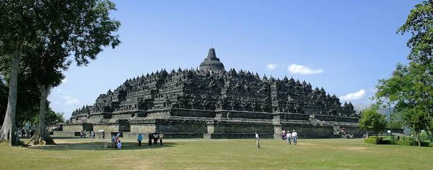
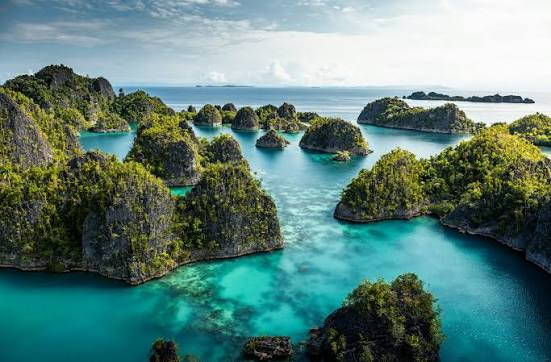

Destinasi Wisata Indonesia
Indonesia memiliki banyak destinasi wisata yang menarik dan indah. Mulai dari wisata alam, budaya, sejarah, hingga wisata bahari dapat ditemukan di berbagai daerah Indonesia.
Bali

Bali merupakan salah satu destinasi wisata terkenal di Indonesia. Bali memiliki pantai, budaya, dan pemandangan alam yang menarik.
Candi Borobudur

Candi Borobudur merupakan salah satu destinasi wisata sejarah dan budaya yang terkenal di Indonesia.
Raja Ampat

Raja Ampat terkenal dengan keindahan laut, pulau-pulau, dan kehidupan bawah lautnya.
Video Wisata Indonesia
Galeri Wisata